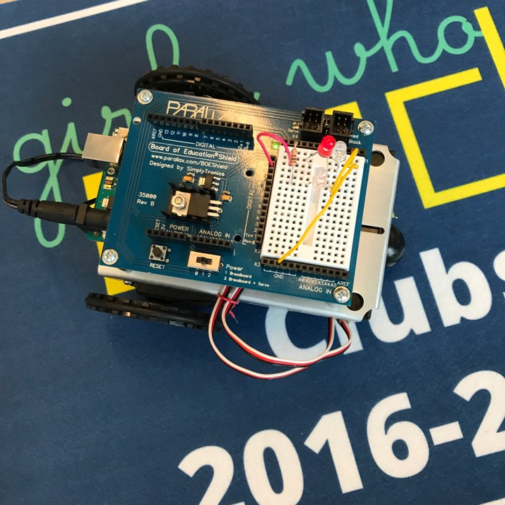

Technology as you know it will run the world, its inevitable. We even find trouble trying to keep up the pace with technology. However as technology is now essential, women arent prominant in this field.
Women in tech—there aren’t that many of them, to be honest.
Girls Who Code is an amazing initiative that brings women together to fight this gender gap. We want to be apart of the future too.
Not only do we learn computer science but we also build a community. A community filled with mentors, peers, and respect; as Girls Who Code preaches "We are a sisterhood".
07/10/2017
During Week 1 of Girls Who Code I learned scratch; a fustrating but fun prpogram that introduces beginners to code. Shortly after Week 2 creeped
up and python made its introduction. Both programs boggled my mind but has peeked my interest. Python and Scratch are both color coded and are
easy to understand. However Python starts with a blank slate while Scratch has variables and functions ready to be used.
With the shape project on Python, we had to debug our program. It was fustrating because it was the first time I've even used python. Being a beginner,
Python deems difficult but with time I'm sure well become bestfriends.
07/15/2017
A list in python is simillar to a grocery list. There are items within the list. Unlike our American counting styles, Python starts counting at one.
07/20/2017
The obama project!!! This project was a great introduction into the world behind filters, the way many change their pictures creatively. As fun as it was, one major challenge I faced was choosing the intensity of rbg. Its more of a intellectual guess and check. Loops was used with picking the pixels, Variables were used to define the colors we wanted, conditions were used for which rbg we wanted to change, and functions were used to be defined. If I had more time I would create a filter that randomized the colors chosen. The highlight of my day was learning CSS! Its the reason why websites become so beautiful and either simple or complex.
07/24/2017
Its robotics week! We are learning about circuits and its functions. The body of a robot! Its a challenge to recognize the connecting bodies especially with the breadboard.

07/26/2017
LED light show was interesting. Changing the colors of the LED lights or high and lows to fit our beat was challenging. Whether in morse code or a beat of a song, anything involving the ardino proves difficult!!!
0729/2017
Circuits are interesting! The servio controls the movement and the piezo controls the sound, its all complicated. My favorite part of the robot dance was cordinating the dance moves to the beat of the songs. Manuela Velso and Ayanna Howard needed conditional outputs for their robot.